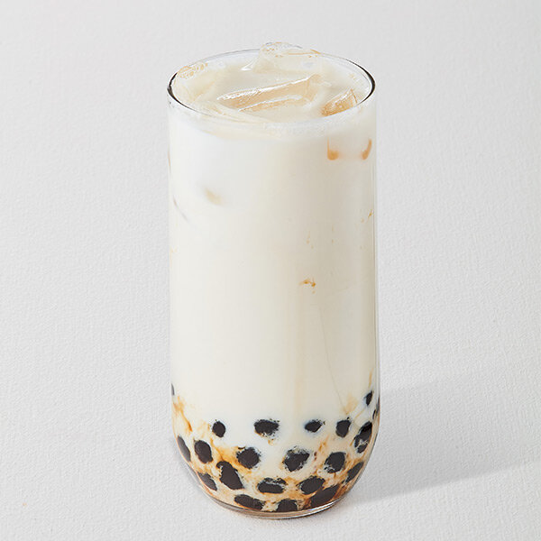

Bubble Milk Tea ^^

What is Bubble Milk Tea?
Bubble Tea, also known as boba milk tea, is a cold, frothy drink made with a tea base shaken with flavors, sweeteners and/or milk with tapioca pearls at the base of the drink.
Ingredients You Will Need for 2 Servings
- Tapioca pearls
- Milk tea powder! Any flavor of your choice
- Water as directed on milk tea powder package
- Ice...ice baby...
Steps
- Read and follow the instructions on the tapioca pearls package to cook them
- Read and follow the milk tea powder package on how to mix; if its not sweet enough or tastes too watered down add more powder!
- Add ice and drink up